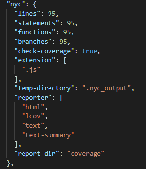

CodeClimate
When setting up test coverage reporting with Code Climate, we must implement test coverage ourselves as part of our CI build.
It must be done in one of our supported languages and formats which is the Icov format with JavaScript.
NYC is just a JavaScript code coverage tool written in JS.
We added the repository in the .travis.yml file. We are running unit tests using mocha and chai here.
All you need to understand is that for the test coverage percentage is the percentage of the code tested.
This is why we must try to have a test coverage of 95+ to ensure quality!
If you want to test your coverage, just run >npm run test
The coverage has 4 parts:
Statements : 100% ( 136/136 )
Branches : 100% ( 55/55 )
Functions : 100% ( 33/33 )
Lines : 100% ( 136/136 )
This is an example of our code coverage for the webcomponent InputRT
In the package.json file, you can set the threshold for your coverage manually.
You can check the status with the GitHub badges or by checking online https://codeclimate.com.
You should be able to see this.
We run the coverage part after the tests: the report is created, encoded and updated to our repository.